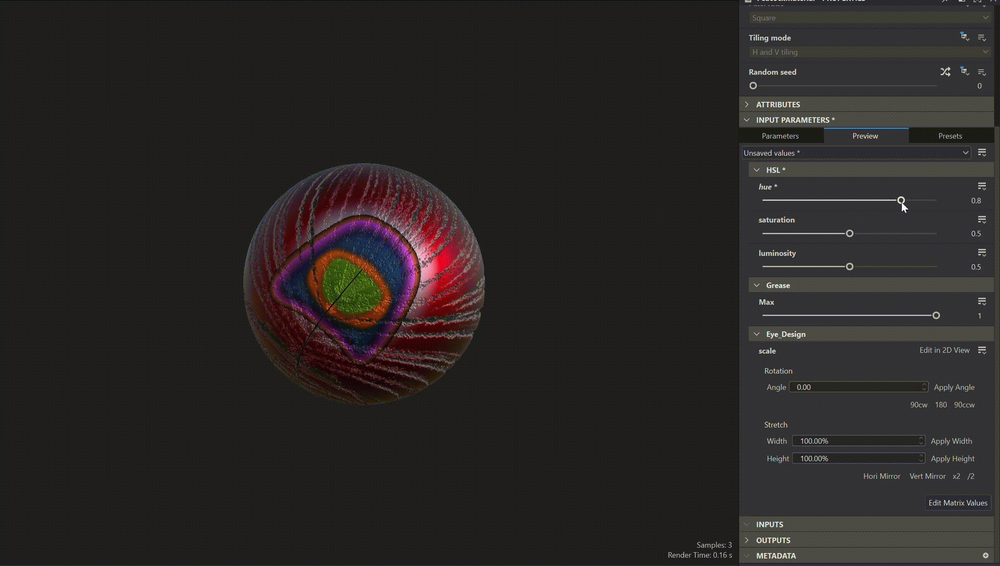
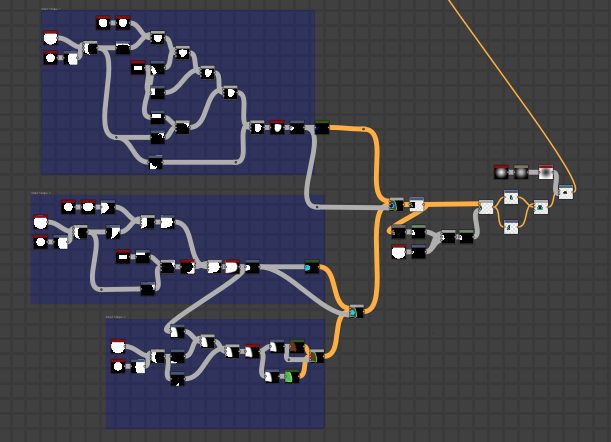
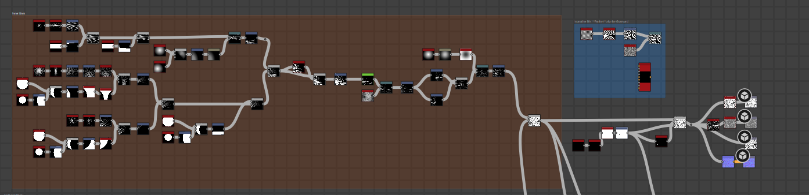
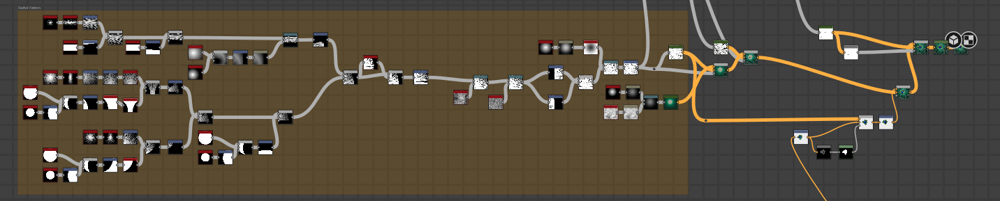

Peacock Feather
- Adobe Substance Designer -
First, I examined my reference to figure out the different layers, which for the peacock feather there were 4 main details that I needed to have: the feathers, the eye design, the feather center, and the greasy shine. One major note is that I made one half first and then mirrored. I started with feathers and experimented with 4 different methods, eventually ending on using the starburst node and then piecing together the different segments for the top, middle, and bottom to get a fanning effect. I then moved on to make the eye design, using various circles that I manipulated and then layered. I then constructed the shape for the center after putting the 2 halves together and blended everything together. I added a metallic mask to get the shine and then in the material tab in the renderer I intensified my height map to help make the feathers have more depth and look fluffier
February 2026



